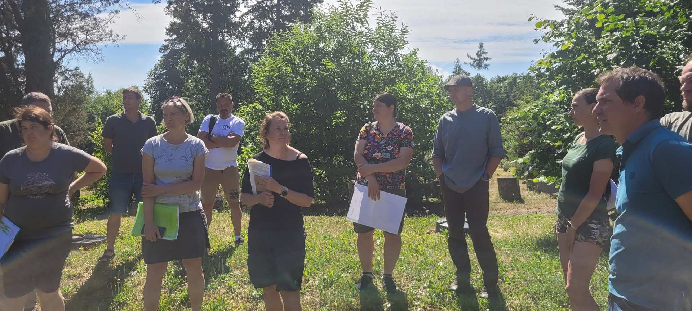
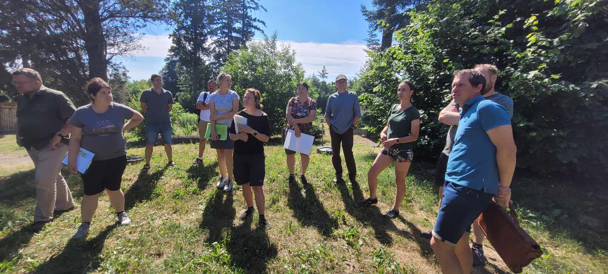
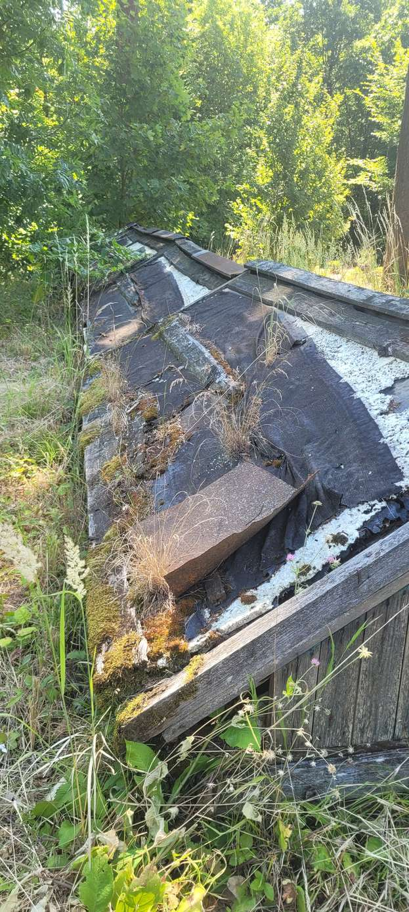
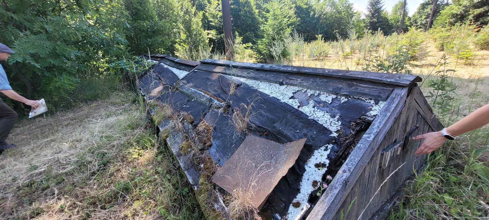
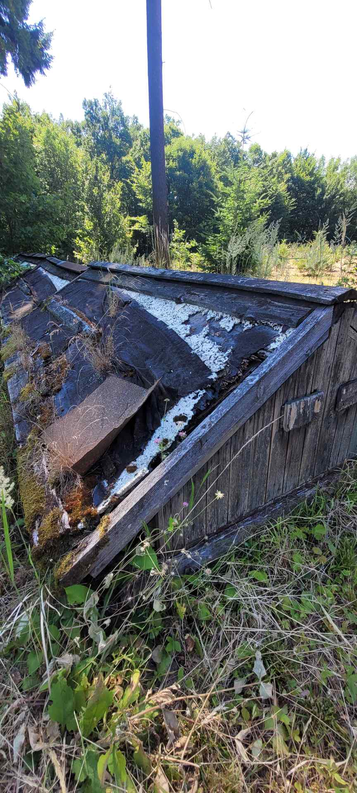

Areál Doubravka u obce Kanice slouží Mendelově univerzitě jako zázemí pro environmentální výchovu, zejména lesní pedagogiku. Místo má přírodní charakter a je využíváno širokou veřejností – od školních kolektivů po rodiny s dětmi. Jde o klidné místo mimo hlavní turistické trasy, které může nabídnout atraktivní alternativu k přetíženým lokalitám v okolí.
Výukový vodní biotop
V areálu Doubravka vznikne školní rybník, který bude sloužit jako výukový vodní biotop. Dětem umožní přímo v terénu pozorovat život ve vodě i v jejím okolí – vodní rostliny, hmyz, obojživelníky a další organismy. Zároveň jim názorně přiblíží význam vody v krajině a fungování vodního ekosystému.
Vzdělávací prvky
Školní rybník bude využíván při vzdělávacích programech zaměřených na vodu v krajině a život ve vodním prostředí. Doplní jej naučná tabule věnovaná životu ve vodě a v jejím okolí a interaktivní výukový prvek, který dětem umožní seznamovat se s vodou hravou a názornou formou. Jeho konkrétní podoba bude upřesněna s ohledem na výsledný návrh rybníka, kvalitu vody a bezpečnost návštěvníků.
Indikátory výsledku
- 1 školní rybník sloužící jako výukový vodní biotop
- 1 naučná tabule o životě ve vodě a jejím okolí
- 1 interaktivní výukový prvek
Realizace
- Oznámení udržovacích prací stavebnímu úřadu II/2026
- Zahájení IX/2026, dokončení VI/2027
- Projekt a technický dozor: Atregia s.r.o.
- Fyzická realizace: KAVYL spol. s r.o.
Obnova nádrže bude realizována formou udržovacích zásahů a drobných terénních úprav, které nepodléhají samostatnému stavebnímu řízení. Harmonogram zahrnuje sedmiměsíční časovou rezervu.
Fotogalerie lokality




